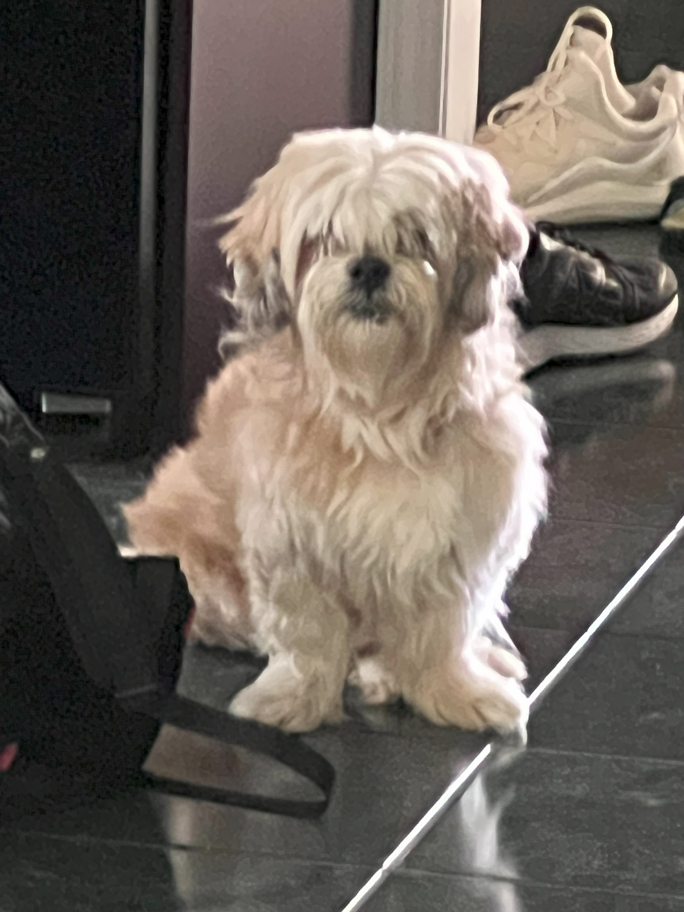

Basil

Basil, otherwise known as Slaysil, is a very energetic white, slightly crusty and trusty, dog (bichon) . She gets princess treatment in her household, but also out in public. As a consequence, she is very clingy and loves to lick, especially in the face.
She endeavors in multiple hobbies and activities, which include flying, licking, standing on two legs, ringing bells, and jumping through hula hoops.
Photo Gallery


Likes
- water bottles
- socks
- cats
River

River is a 7 year old bichon frise. Though he is aging, he is extremely active and loves to play. He likes to throw things. He will throw his ball down the stairs and play fetch with himself if you don't give him attention. He will also throw his food and water bowl to let us know he wants more.
River is obsessed with my mom. My mom is the one who mostly walks him and gives him treats. Anywhere my mom goes, River follows. If she's gone for 2 minutes, he will frantically search the house for her. Although he likes being with people, he hates being cuddled or held.
Photo Gallery


Likes
- Attention
- Treats
- Rolling ball down the stairs
Jojo

Jojo is a 14 year old dog that has grown up with me. He's a Lhasa-Apso which is a breed from Tibet that's known to be a watchdog. Funny enough, Jojo acts exactly like a watchdog. He likes to spend his days sitting next to a window looking and barking at people passing by. He is only a watchdog though, as he gets scared very easily.
His favorite thing in life is food and his favorite foods are sweet potatoes and naan. He loves walks as well, however he will not go outside if it's raining or if there's a lot of snow on the ground. He's taken some old blankets and pillows we had to make his own bed. He's also trilingual, able to understand English, Hindi, and Japanese.
Photo Gallery



Likes
- Being carried like a baby
- Walks
- Sleeping
Bear

Bear is a lazy, food-loving dog that is sometimes playful. His favorite activity is lying in the sun on his side and lounging. He enjoys playing with his toys and loves to fetch them when you throw them, but eventually, he gets bored and just stops fetching them and lays down.
Bear is also scared of a lot of things. He doesn't like water (showers and even rain) or getting his nails clipped, and he's sometimes even so lazy that he'll just stop walking and sit down until you turn around and go back home.
Photo Gallery


Likes
- Food
- Laying in bed
- Fetch
Jingle

Jingle loves going outside. He used to be an outdoor/indoor cat until we realized that he loved to get injured. Now, we take him on walks with a leash which he loves! Every time he sees me carrying the leash he goes crazy and meows to go out.
Jingle is very mischievous, he has gotten into many different accidents. His first accident was outside; a bee stung his paw and he cried all night long. The second one was ALSO outside, he got stuck on a tree for four days. Finally, he came back home one day with his tail bleeding and ripped out.
Photo Gallery


Likes
- Going on walks
- Being pet
- Eating treats
Zack

Zack is an African grey parrot, aged around three years old. Zack loves flying and being outside of the cage at all times. He's very nice but bites so much.
Zack's favorite foods are unsalted sunflower seeds and mangos. He loves being able to sit on people's shoulder and talking to them. Zack knows over 500 words and learns more everyday.
Photo Gallery


Likes
- Sunflower seeds
- Flying
- Going on walks
Yugi

Yugi is a 7 year old chihuahua who loves love and adores attention. A member of the sassy dog community, he is full of personality and character with a response for everything. Nicknamed King Yugi, he holds himself as a true royal and leader of the home, being given all the luxuries in life by his humans.
With the ability to love beyond his small body, Yugi is an attached lap dog that loves to be your sidekick. Protective, caring, and cuddly, there is never a time he isn't there to support you and is always prepared for a short-notice nap time.
Photo Gallery


Likes
- Cuddling
- Sleeping
- Doing tricks for treats